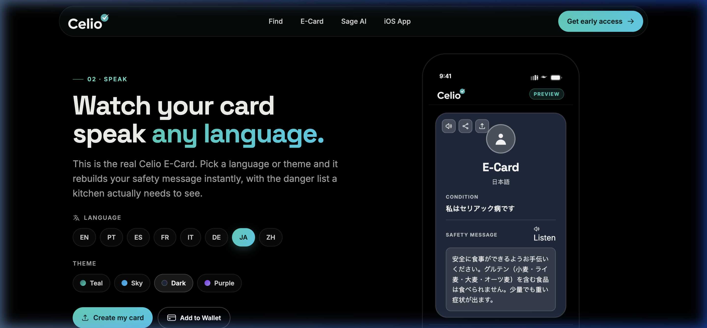

01. The Challenge: Closing the Trust Gap
"I don't trust the translation app to understand my severety. I don't trust the waiter's preference". It's a medical necessity where a single crumb ruins the trip. The primary source of friction lies in the overwhelming cognitive burden of constantly evaluating risks, coupled with the apprehension of miscommunication in high-stress, foreign settings.
I built Celio because I live this. The goal was to close the Trust Gap that exists when you hand over a translated note and just hope it works. Existing solutions are often clinical, require server dependence, and increase anxiety. These are luxuries you don't have when you're hungry in a remote Italian village.
02. The Strategy: A Survival Kit Approach
Celio is more than a tool; it's a survival kit rooted in strategic design. It tackles the problem by focusing on communication reliability and vetted information:
1. The Translation Card
The Translation Card translates allergy profiles into 12 languages (including Japanese, French, Portuguese, and Spanish). It features local text-to-speech audio and native Apple & Google Wallet integration.
2. Sage AI (Local LLM)
Sage AI is a client-side AI assistant running entirely on-device via WebLLM. By running the LLM in-browser, travelers can query local travel safety guides offline and in airplane mode.
3. Interactive Local Maps
The Local Map offers client-side interactive geolocation filtering. Celiacs can easily toggle between Restaurants, Groceries, or 100% Gluten-Free spots without needing active internet connection.
 Early E-Card: Functional but lacked visual urgency.
Early E-Card: Functional but lacked visual urgency.

Live E-Card: Bold, clear card rendering Japanese (JA) allergy warning, audio synthesis trigger, and Apple/Google Wallet export links. Early Sage AI: Cluttered, text-heavy interface.
Early Sage AI: Cluttered, text-heavy interface.
 Live Sage AI: Clean, offline conversational interface powered by on-device inference (WebLLM).
Live Sage AI: Clean, offline conversational interface powered by on-device inference (WebLLM).
03. Discovery: Hypothesis Driven Research
I didn't guess; I initiated a qualitative research phase (N=12) with severe allergy travelers to establish design hypotheses. The consensus was clear: anxiety directly stems from a lack of control and communication integrity.
Insight: The "Audio Mandate" & Wallets
10/12 participants feared staff wouldn't read the screen. This mandated Offline Audio Support (using the Web Speech API) and native Mobile Wallet passes. Handing over a phone with a large, spoken safety card in Apple Wallet or Google Wallet minimizes anxiety and guarantees reliability without cellular signal.
Insight: Lag Creates Doubt
Users equated UI lag with system unreliability. This drove a technical pivot to Alpine.js for client side state management, eliminating server reloads. The result is an instant, native feel that builds crucial trust through performance.
04. Technical Feasibility and The Code
I chose a clean but powerful stack. Django anchors the backend for pass creation, PostgreSQL data, and localized content storage. Alpine.js controls client-side state machine mechanics, providing a snappy experience.
The most critical technical decision was enabling **Offline First Operations**. Sage AI runs locally in the browser utilizing **WebLLM and WebGPU**, loading models directly to client storage so AI-based food assessments require no cellular signal. The Translation Card caches translations and speaks using browser speech synthesis, while generating `.pkpass` binary files for Apple Wallet and signed JWT links for Google Wallet, allowing users to save their credentials permanently.
05. Outcomes, Learnings, and Growth
Celio confirms that our focus must be on trust, not data display. By rigorously testing the human emotion surrounding the product, I created a tool that empowers users to confidently say "Yes" to that dinner invitation. The project taught me that hypothesis driven research is mandatory to ship a truly accessible and robust solution.
Try Celio Now →06. Why I Built This
I started building Celio shortly after a trip to Mexico. Communicating my allergy needs to resort staff was genuinely difficult, and it got worse at airports where I was trying to order food quickly with no shared language. Celio came out of that frustration. At its core it reduces the anxiety that comes with eating safely when you have a food allergy abroad.
One of the most difficult things about having celiac disease is communicating it while traveling. That gets even harder when there's a language barrier. You're not just explaining a preference — you're explaining something that makes you sick. Celio exists to make that easier.
07. Research Process
Before I wrote a single line of code I spent two months talking to people.
I found participants on Reddit, Facebook, and Discord. Some were reluctant at first but most opened up once they understood what I was building. I also recruited friends, family, and classmates. At one point I had over 50 people actively using the app and giving feedback. That level of engagement told me the problem was real and the solution was resonating.
Research Question 1
What does communicating a dietary need abroad actually feel like in the moment?
Research Question 2
Where does the fear live — before the meal, at the table, or after?
Research Question 3
What would genuinely make someone feel safe?
The feedback that surprised me most led to the audio feature. I hadn't planned it — users brought it up on their own. They also asked about Apple Wallet integration and flagged that the interface felt laggy, which I ended up fixing by switching to Alpine.js. Those three things came entirely from listening.
08. What Changed Because of Research
The card felt sluggish
Participants described the e-card as laggy and slow to update. It wasn't smooth. I traced the issue back to HTMX and switched to Alpine.js which made interactions instant. A tool people use in stressful real-world situations can't feel hesitant.
Text alone wasn't enough
Staff at restaurants were used to translation apps having audio. Without it there was tension — showing a silent screen only worked about half the time. Users felt noticeably more confident once audio was added and so did the staff they were communicating with. Safety goes both ways.
It needed to work under pressure
When I heard people describing real struggles using the card in live situations I went straight into problem solving mode. I wanted it to be intuitive enough that someone could use it while stressed, standing up, handing their phone across a table. That meant rebuilding the UI with simplicity and responsiveness as the priority, not just functionality.
People were using it in ways I didn't expect
A few users told me they'd used Celio at weddings and catered events — they just sent a PDF of their e-card when asked about dietary preferences. That felt great to hear. I built it for restaurants abroad and people were extending it into their everyday lives at home.
Apple & Google Wallet makes complete sense
Mobile wallets have replaced physical cards for modern travelers. Integrating native Apple Wallet (.pkpass) and Google Wallet passes allows users to bypass network dependencies entirely. Having the translation card accessible in a single tap on the lock screen is the ultimate friction reduction in high-anxiety foreign restaurant encounters.
09. What I Learned
Building Celio taught me that research isn't optional when you're building something real. You can have a great idea and still get the product wrong if you don't understand what people actually need. The audio feature, the Apple Wallet request, the interface feedback — none of that came from me sitting alone thinking about the product. It came from listening. That's the part I'll take into every project going forward.